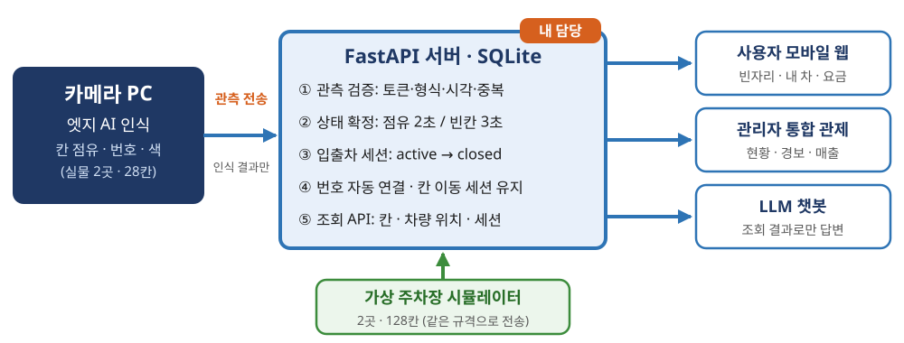
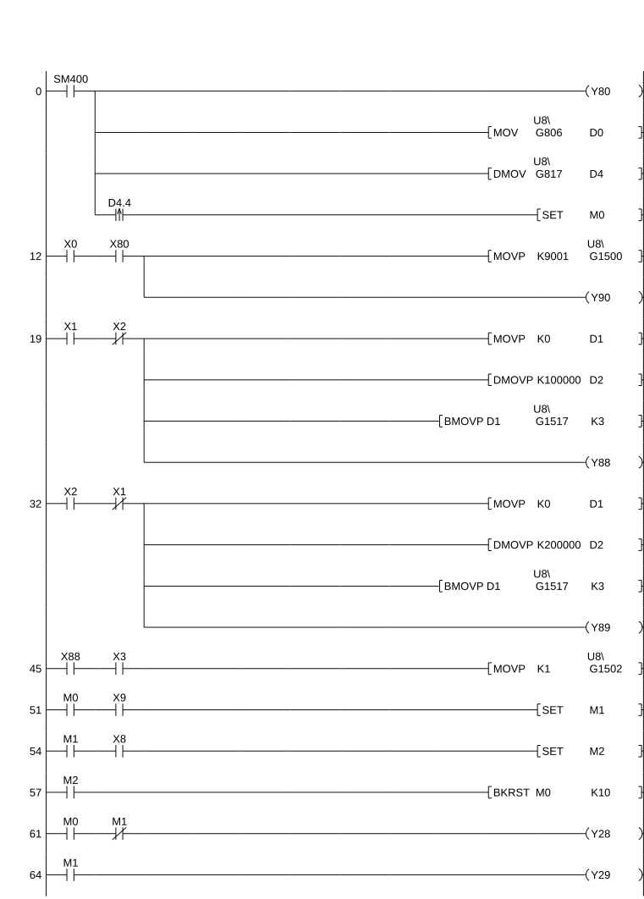
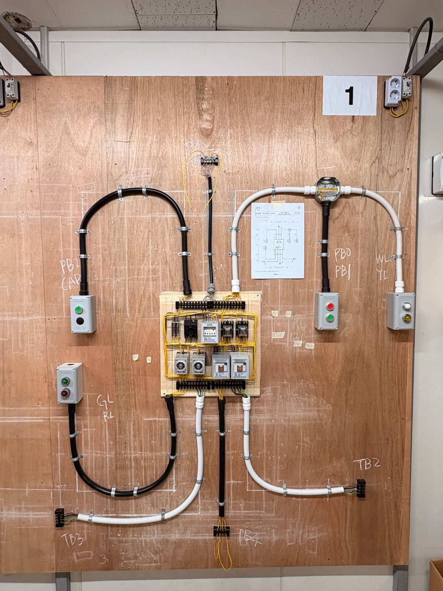

박해준
자동화 분야 신입 지원
교육 과정에서 직접 해 본 실습과 프로젝트 모음
huks1357@gmail.com01프로젝트
팀 프로젝트 · 2026.10.22 ~ 11.13
시스템 구성도 (주황색 표시가 담당 영역)

AI 학습용 차량 사진을 찍는 장면 (RealSense D435 카메라)
AI 스마트 주차장 통합관제 (PARK:ON)
- 인원
- 6명
- 담당
- 카메라 인식 결과를 받아 주차·입출차 기록을 관리하는 서버(FastAPI·SQLite), 학습용 차량 사진 촬영
- 방식
- 코드는 AI 코딩 도구로 작성, 동작 조건 정리와 시험·확인 담당
운전자가 주차장에서 궁금해하는 빈자리, 내 차 위치, 요금을 한 화면에서 보여 주고, 관리자는 여러 주차장을 한 번에 볼 수 있게 하자는 게 출발이었다. 카메라로 미니어처 주차장을 찍어 칸마다 어떤 차가 있는지 확인하고, 실물 주차장 2곳(28칸)과 가상 주차장 2곳(128칸)을 서버 하나로 묶었다. 나는 카메라가 보내는 인식 결과를 받아 어느 칸에 어떤 차가 언제 들어오고 나갔는지 기록하는 서버를 맡았다.

맡아서 고친 부분
1. 실물 카메라 연결 후 반복된 오류
- 문제: 차를 옆 칸으로 옮기거나 두 차 자리를 바꾸면 서버 기록과 카메라가 읽은 번호가 어긋나 오류 발생
- 조치: 도착 칸에 같은 번호가 이어서 보이고 원래 칸이 비면 이동으로 처리, 입차 시각과 요금은 그대로 유지 (팀원과 규칙 협의 후 반영)
- 확인: 실물 주차장에서 자리 바꾸기·빈칸 이동 시험, 오류 없음
2. 번호를 늦게 읽은 차의 기록
- 문제: 번호판을 바로 못 읽은 차는 번호 없이 기록 시작
- 조치: 같은 번호가 짧은 시간 안에 여러 번 확실히 읽힐 때만 기록에 번호 연결 (팀장 승인 후 반영)
3. 오류 하나로 수신 전체 정지
- 문제: 잘못된 데이터 하나에 카메라 데이터 수신 전체가 멈춤
- 조치: 다시 보내도 안 되는 데이터만 따로 분리, 나머지는 계속 수신
결과 (팀 통합 시험)
- 30분 동안 카메라가 보낸 인식 결과 82,849건 전부 수신
- 실물 주차장 차량 8대·11대 이동 시험에서 주차 기록 유지
팀 프로젝트 · 진행 중 · 2026.11.17 ~ 12.01
배터리 셀 입고검사·매칭 공급 라인 디지털 트윈 (팀 Cellect)
- 인원
- 5명
- 담당
- Factory I/O 가상 공정 구성, PLC 연동
- 사용
- GX Works2, MX OPC Server, Factory I/O
- 배터리 셀 입고 → 식별 → 측정 → A/B/C 등급 분류 → 박스 패킹 라인을 Factory I/O 가상 공정으로 구성하고 PLC로 제어
- 측정 1회에 약 10초가 걸려 셀이 밀리는 문제를 줄이기 위해 측정 장비 3대 병렬 구성으로 진행 중
- 결과는 프로젝트 종료 후 정리 예정
팀 프로젝트 · 설계 단계
배터리팩 조립·검사 자동화 공정 (가칭)
- 18650 셀 4개 조립과 전압 검사 공정 설계 중
- PLC와 Indy7 협동로봇 연동 방향 검토
02교육 실습
대한상공회의소 부산인력개발원 · 인텔 AI융합 DX마스터클래스 (2026.06 ~ 2026.12)
PLC · 서보
직접 작성한 GX Works2 래더
서보모터 위치결정 제어
- 버튼 입력으로 원점 복귀, 미리 정한 두 위치로 이동하는 래더 작성
- 이동할 위치 값을 위치결정 모듈에 넣고 출발 신호를 주는 방식
- 서보앰프 MR-J4 사용

PLC · 교육 평가 과제

직접 작성한 공정 순서 래더 (위: 단계 진행, 아래: 실린더·램프 출력)
PLC 공정 순서 제어
- 공급 → 드릴 가공 → 송출 → 배출 순서로 움직이는 실습 장비의 래더 작성
- 센서로 실린더가 끝까지 움직였는지 확인한 뒤 다음 단계로 진행
- 드릴 가공은 타이머로 2초, 초기화 버튼으로 실린더 전체 원위치
로봇 · PLC · Python
Indy7이 공급부의 부품을 집어 트레이에 옮기는 장면
Indy7 협동로봇 픽앤플레이스
- Indy7로 부품을 집어 지정 위치에 놓는 픽앤플레이스 실습
- 작업판 칸 번호를 로봇 좌표로 변환, 작업 위치 바로 위 안전 높이를 거쳐 진입·복귀
- PLC 버튼 신호를 Python 프로그램이 읽어 로봇 작업을 시작하는 연동 실습
시뮬레이션
Factory I/O 비전 분류
- 컨베이어로 오는 물체를 비전 센서가 초록·파랑·금속으로 구분하면 해당 푸셔가 밀어내 분류하는 래더 작성
- 푸셔가 끝까지 나갔다 돌아왔는지 센서로 확인한 뒤 다음 물체 처리
- PLC와 Factory I/O는 OPC로 연결
공유압

전기공압 실습 장치 배선·배관
전기공압 회로 동작
전기유압 회로 동작
전기공압 · 전기유압 회로
- 릴레이와 솔레노이드 밸브 배선, 실린더까지 공기·유압 호스 연결
- 회로 구성 후 실린더 동작 확인
03자격 준비: 전기기능사
필기 합격 · 실기 응시 2026.11.24
완성한 작업판

도면을 보고 작업한 과제
완성 후 동작 확인
- 실기 대비로 회로 도면을 보고 제어함 부품 배선부터 배관까지 반복 연습

04다뤄 본 도구
| 분야 | 내용 |
|---|---|
| PLC | Mitsubishi GX Works2 (래더, 서보 위치결정) |
| HMI | Pro-face GP-Pro EX (기초) |
| 시뮬레이션 | Factory I/O |
| 로봇 | 뉴로메카 Indy7 |
| 공유압 | 전기공압·전기유압 회로 구성 |
| 전기 | 시퀀스 회로 제어함 배선 (전기기능사 실기 준비) |
| 프로그래밍 | Python (AI 코딩 도구 활용) |
모두 교육 과정에서 익힌 기초 수준